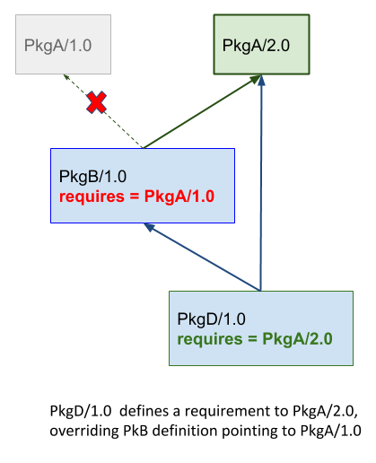

Introduction to versioning¶
Versioning approaches¶
Fixed versions¶
This is the standard, direct way to specify dependencies versions, with their exact version, for example in a conanfile.py recipe:
requires = "zlib/1.2.11@conan/stable"
When doing a conan install, it will try to fetch from the remotes exactly that 1.2.11 version.
This method is nicely explicit and deterministic, and is probably the most used one. As a possible disadvantage, it requires the consumers to explicitly modify the recipes to use updated versions, which could be tedious or difficult to scale for large projects with many dependencies, in which those dependencies are frequently modified, and it is desired to move the whole project forward to those updated dependencies.
To mitigate that issue, especially while developing the packages, you can use fixed versions with package revisions (see below) to resolve automatically the latest revision for a given fixed version.
Version ranges¶
A conanfile can specify a range of valid versions that could be consumed, using brackets:
requires = "pkg/[>1.0 <1.8]@user/stable"
When a conan install is executed, it will check in the local cache first and if
not in the remotes what pkg versions are available and will select the latest one
that satisfies the defined range.
By default, it is less deterministic, one conan install can resolve to pkg/1.1 and
then pkg/1.2 is published, and a new conan install (by users, or CI), will automatically
pick the newer 1.2 version, with different results. On the other hand it doesn’t require
changes to consumer recipes to upgrade to use new versions of dependencies.
It is also true that the semver definition that comes from other programming languages doesn’t fit that well to C and C++ packages, because of different reasons, because of open source libraries that don’t closely follow the semver specification, but also because of the ABI compatibility issues and compilation model that is so characteristic of C and C++ binaries.
Read more about it in Version ranges section.
Package alias¶
It is possible to define a “proxy” package that references another one, using the syntax:
from conans import ConanFile
class AliasConanfile(ConanFile):
alias = "pkg/0.1@user/testing"
This package creation can be automatically created with the conan alias command, that
can for example create a pkg/latest@user/testing alias that will be pointing to that
pkg/0.1@user/testing. Consumers can define requires = "pkg/latest@user/testing" and
when the graph is evaluated, it will be directly replaced by the pkg/0.1 one. That is,
the pkg/latest package will not appear in the dependency graph at all.
This is also less deterministic, and puts the control on the package creator side, instead of the consumer (version ranges are controlled by the consumer). Package creators can control which real versions will their consumers be using. This is probably not the recommended way for normal dependencies versions management.
Package revisions¶
Revisions are automatic internal versions to both recipes and binary packages. When revisions are enabled, when a recipe changes and it is used to create a package, a new recipe revision is generated, with the hash of the contents of the recipe. The revisioned reference of the recipe is:
pkg/version@user/channel#recipe_revision1
# after the change of the recipe
pkg/version@user/channel#recipe_revision2
A conanfile can reference a specific revision of its dependencies, but in the general case that they are not specified, it will fetch the latest revision available in the remote server:
[requires]
# Use the latest revision of pkg1
pkg1/version@user/channel
# use the specific revision RREV1 of pkg2
pkg2/version@user/channel#RREV1
Each binary package will also be revisioned. The good practice is to build each binary just once. But if for some reason, like a change in the environment, a new build of exactly the same recipe with the same code (and the same recipe revision) is fired again, a new package revision can be created. The package revision is the hash of the contents of the package (headers, libraries…), so unless deterministic builds are achieved, new package revisions will be generated.
In general revisions are not intended to be defined explictly in conanfiles, altough they can for specific purposes like debugging.
Read more about Package Revisions
Version and configuration conflicts¶
When two different branches of the same dependency graph require the same package, this is known as “diamonds” in the graph. If the two branches of a diamond require the same package but different versions, this is known as a conflict (a version conflict).
Lets say that we are building an executable in PkgD/1.0, that depends on PkgB/1.0 and PkgC/1.0, which contain static libraries. In turn, PkgB/1.0 depends on PkgA/1.0 and finally PkgC/1.0 depends on PkgA/2.0, which is also another static library.
The executable in PkgD/1.0, cannot link with 2 different versions of the same static library in PkgC, and the dependency resolution algorithm raises an error to let the user decide which one.

The same situation happens if the different packages require different configurations of the same upstream package, even if the same version is used. In the example above, both PkgB and PkgC can be requiring the same version PkgA/1.0, but one of them will try to use it as a static library and the other one will try to use it as shared library. The dependency resolution algorithm will also raise an error.
Dependencies overriding¶
The downstream consumer packages always have higher priority, so the versions they request, will be overriden upstream as the dependency graph is built, re-defining the possible requires that the packages could have. For example, PkgB/1.0 could define in its recipe a dependency to PkgA/1.0. But if a downstream consumer defines a requirement to PkgA/2.0, then that version will be used in the upstream graph:
This is what enables the users to have control. Even when a package recipe upstream defines an older version, the downstream consumers can force to use an updated version. Note that this is not a diamond structure in the graph, so it is not a conflict by default. This behavior can be also restricted defining the CONAN_ERROR_ON_OVERRIDE environment variable to raise an error when these overrides happen, and then the user can go and explicitly modify the upstream PkgB/1.0 recipe to match the version of PkgA and avoid the override.
In some scenarios, the downstream consumer PkgD/1.0 might not want to force a dependency on PkgA. There are several possibilities, for example that PkgA is a conditional requirement that only happens in some operating systems. If PkgD defines a normal requirement to PkgA, then, it will be introducing that edge in the graph, forcing PkgA to be used always, in all operating systems. For this purpose the override qualifier can be defined in requirement, see requirements().
Versioning and binary compatibility¶
It is important to note and this point that versioning approaches and strategies should also be consistent with the binary management.
By default conan assumes semver compatibility, so it will not require to build a new binary for a package when its dependencies change their minor or patch versions. This might not be enough for C or C++ libraries which versioning scheme doesn’t strictly follow semver. It is strongly suggested to read more about this in Defining Package ABI Compatibility